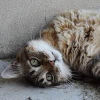

Pluriel
Sexe:F
Âge:4 ans
Pluriel est joueuse et s'intéresse à tout. Elle s'entend bien avec tout le monde également avec les chiens.
L'adopter !Sexe:F
Âge:4 ans
Pluriel est joueuse et s'intéresse à tout. Elle s'entend bien avec tout le monde également avec les chiens.
L'adopter !Sexe:M
Âge:8 ans
Simba aime les coins de soleil où se prélasser. Pas joueur mais très câlin et docile.
L'adopter !Sexe:F
Âge:2 ans
Jade est très attachante et sociable. S'entend très bien avec les chiens et a besoin de beaucoup de proximité avec les humains.
L'adopter !Sexe:M
Âge:2 ans
Charles est un jeune chien plein d'entrain et de bonne humeur. Très câlin et joueur, il s'entend très bien avec les enfants.
L'adopter !Sexe:F
Âge:7 ans
Neya aime les promenades et a besoin d'un espace extérieur pour être heureuse Elle se montre destructrice si elle est enfermée en intérieur. Ne s'entend pas avec les chats.
L'adopter !Sexe:F
Âge:7 ans
Leona est protectrice et loyale. Elle aime se prélasser au soleil et se baigner. Eviter les contacts avec les enfants en bas âge.
L'adopter !Sexe:F
Âge:17 ans
Ana est la doyenne de nos compagnons, elle est attachante et à l'écoute. Sa santé ne lui permet pas de marcher longuement et elle a besoin de confort en intéreiur. Ne s'entend pas avec les chats.
L'adopter !Sexe:M
Âge:1 ans
Rody est un chiot qui adore jouer avec les humains. Il est propre mais pas encore habitué au rappel.
L'adopter !